在此感谢基恩士keyence开放了所有相关的软件及学习资料，基本上目前关于视觉检测的知识，50%以上是从keyence发布的各种资料中得到的。 thanks :-)
使用Keyence是因为公司有个项目中使用了基恩士的CV-X系列相机，用于检测产品外包装箱上的生产日期及批号是否正确。本来还想检测“追溯码”，但是由于光日期及批号检测就误差率很大了，所以后来就没增加。
如果调整好相机和软件中各参数，短时间(产品>200)时，误检率(主要是合格的当成不合格)<1%；在长时间(产品>1000)测试时，误检率(主要是合格的当成不合格)<8%；
客户要求的24小时内误检率是0.1%，当时公司为了拿下项目，不管实际能不能实现就同意了,正好客户用这条不达标扣除5%的项目费。
所以不要胡乱答应客户的要求，有些只是他们随口说说，他们屁也不懂。
就比如这个客户，还想要那种即使只有印刷半个字符，只要是人眼能看出来，就应该认为是正确的，他们把相机当成人眼了，并且是他们的眼，有种连小孩都没法识别出来，他们也认为是正确，这就是胡乱要求。
但是由于现场人员不懂具体参数如何调试，所以经常换了个品种之后，误检率达到30%，即使给他们写了个简易调整说明四步法，照样不使用。
所以别看基恩士的软件已经很简单化了，但是照样对现场人员不“友好”，所以国内那些要写”脚本“的视觉软件，更不用想了。
针对这个项目我单独写个文档，参考：
基恩士CVX视觉检测产品生产日期及批号
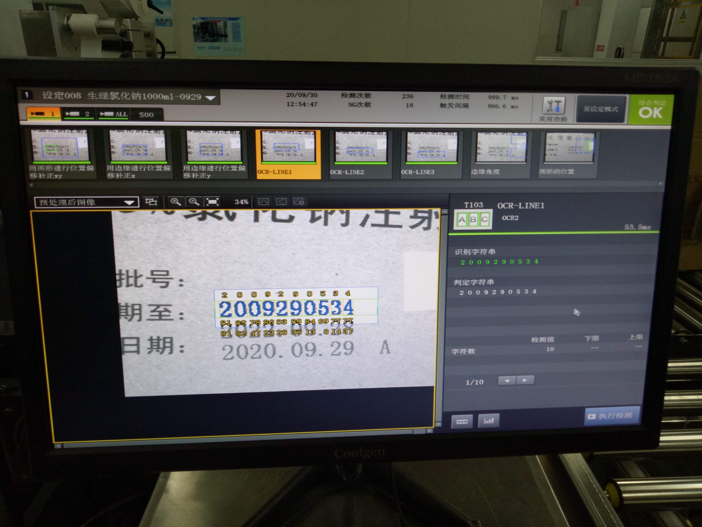
下面我就针对上面项目中使用过程中，要实现最终结果，遇到的各种问题进行简单介绍。
=========================================================================================
任何视觉检测项目的重点在于“光源”，光源设计基本决定是否成功的50%，该项目因为客户“要求相机全防护”，造成光源更改了三次。外壳设计三次如下：
第一次，将相机和条形光源灯放在大的外罩中。缺点：1. 相机在罩子中，不能方便调整；2. 光源灯采用的是条形面光，实际光是很亮的条形，造成中间太亮，上下外围太暗，从而无法调整好整个图像的均匀性。

第二次，增加了前后上下方向调节导向杆，去掉了条形光源灯；但是外罩还是很大，依然无法方便调节相机位置。同时由于没有光源灯，外罩很大导致相机拍摄图像很暗，依然不容易调整整体图像亮度。导向杆由于设计余量不够，同时因为导杆是不锈钢，而滑块是铝，两者润滑不够，所以导致调节起来很难，从而现场人员也不愿意调节，使得使用效果很差。

第三次，把外罩减少至只护相机那部分，这样可以既保护相机，又增加采光量（使用屋顶照明灯，因为距离纸箱远，减少了反光；缺点就是依赖外部光）。当然导向杆没有变更(为了省200元导致项目扣掉>2万)，依然很难调整。
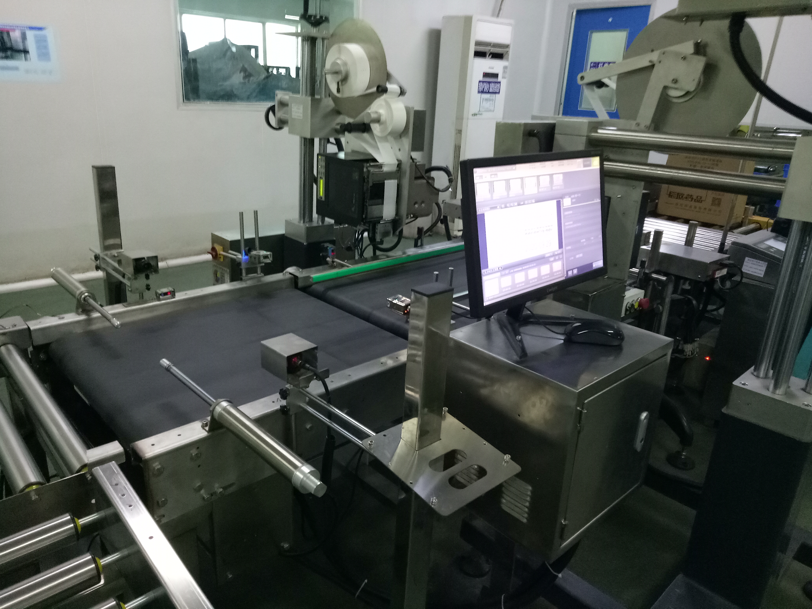
=========================================================================================
增加挡停装置。一开始的设计是考虑产品节拍较快(最快可能是20箱/分)，所以没有挡停，直接快速拍照。但是实际生产线前段是一个喷码设备，最快也要5秒，(所以由此也看出客户要求的节拍就是随口乱说)。并且不停止拍照，容易导致每次拍摄的图像范围差别太大，以及图像容易模糊不易处理。
现在增加了如下图所示的挡停机构：(目前也有缺陷，因为要适配大小各种箱子，气缸长度计算不对，在小箱子时，不能有效挡停，然后就会气缸前端插入箱子内部，损坏产品。)

现在基本上每次拍摄的图像范围前后误差<20mm，这样修正图像X基准线就容易多了。
=========================================================================================
下面就箱子上生产日期及批号识别进行分析，简单使用说明如下6张图片：
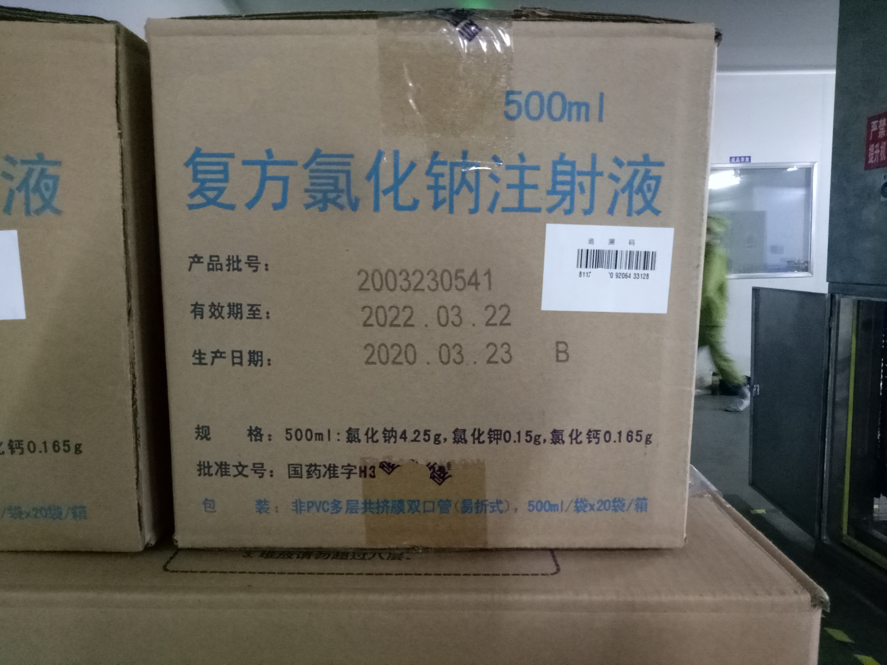 
0-产品箱子整体图 1-调整摄像头


2-基准图像 3-图形修正


4-边缘修正 5-OCR识别
=========================================================================================
一：调整摄像头，因为箱子大小差别比较大，而工业相机所配的镜头一般都是固定焦距，所以针对不同箱子，需要调整摄像头与箱子之间的距离，使其能拍摄“生产日期及批号”而又不会拍到更多无效内容。
目前这个项目一开始是固定式，要想移动必须移动包含外罩的整体架子，后来才改成可以调整XZ导向杆方式，但是由于导杆是不锈钢，固定块是铝，外加配合孔尺寸太紧，导致移动很难，影响客户使用体验。
而现场有个其他家做的XYZ都可以调整的样例，别问我为什么不照别人的一样做:-(
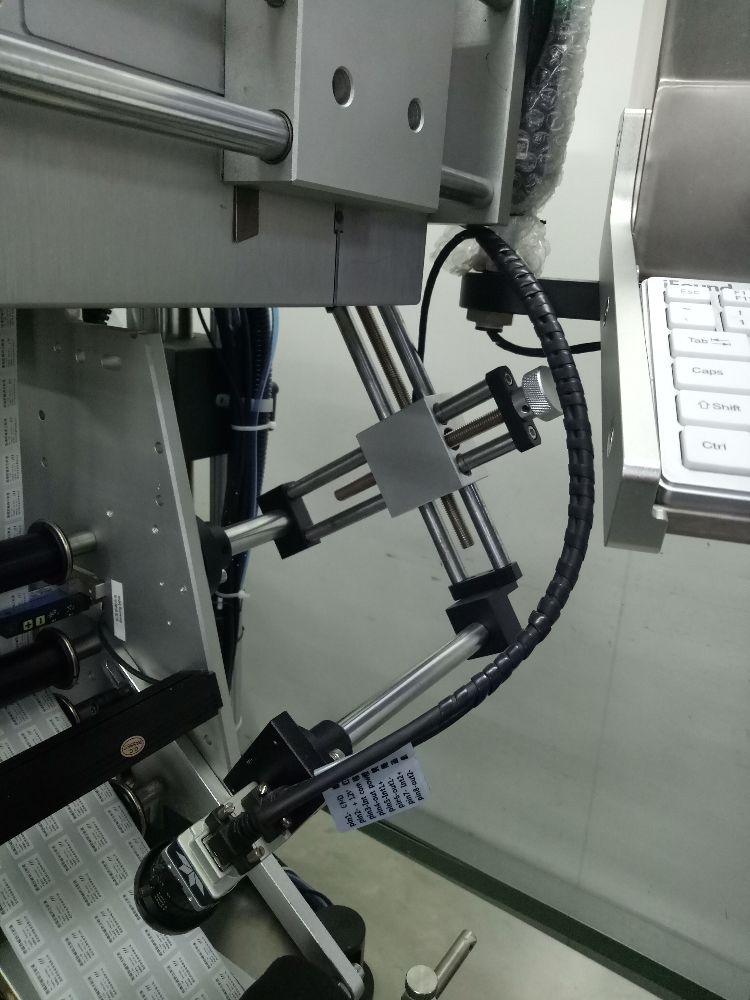 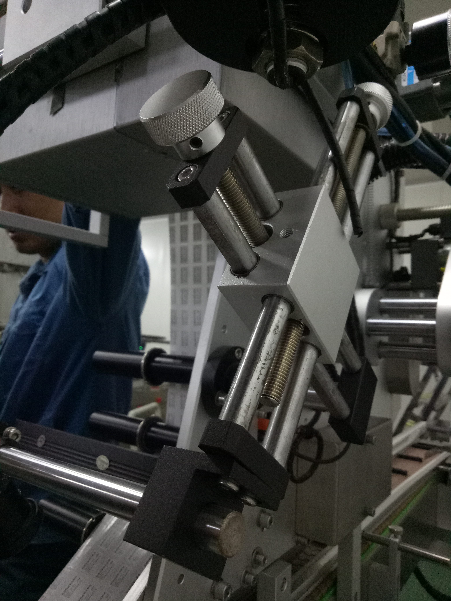
千万别为了省一点点材料钱浪费时间还被扣项目钱，捡了芝麻丢了西瓜
=========================================================================================
二：图像补正，因为皮带上的箱子是运动的，即使有挡停，每次停止的位置也有稍许误差，并且由于要识别日期中的小数点"."，如果不设置左侧基准线，会导致整个打印区域的左侧冒号":"也会被识别，从而导致误检。
(因为基恩士只能选择识别类别“数字”、“符号”、“字母”、“汉字”等，冒号与句号归为同一类。除非自己写程序的那种，默认左侧第一个数字才开始识别，或者自动剃除冒号。)
在使用图像补正xy时，选择搜索对象要选择具有唯一性的，比如下图中，若只搜索“20”则有多个结果。当然最好的是搜索一个多个产品共有的特征，这样换产品后也不用修改了。
使用边缘修正X/Y时，需要在前面图像补正后再确定左边和上边的边缘线，留出半个字符的长度就可以了。
=========================================================================================
三：OCR识别，此项主要就是针对单行字符进行识别，要识别率高，除了匹配算法高效和字库中包含各种变形的字符，更重要的是图像预处理，要给出明显的只有字符图像，否则各种字符断开或者模糊、黑色杂点干扰都会导致识别误差。
针对纸箱上的喷墨打印，一是由于纸箱本身在黑白相机中是含有各种杂点灰色的，并且生产线上的喷墨打印长时间使用容易有划痕和墨迹不均匀，造成字符粘连和笔迹断开。
预处理过程：0-模糊处理 -> 1-膨胀X -> 2-膨胀XY -> 3-实时浓淡补正 -> 4-二值化 -> 5-收缩X -> 6-收缩Y
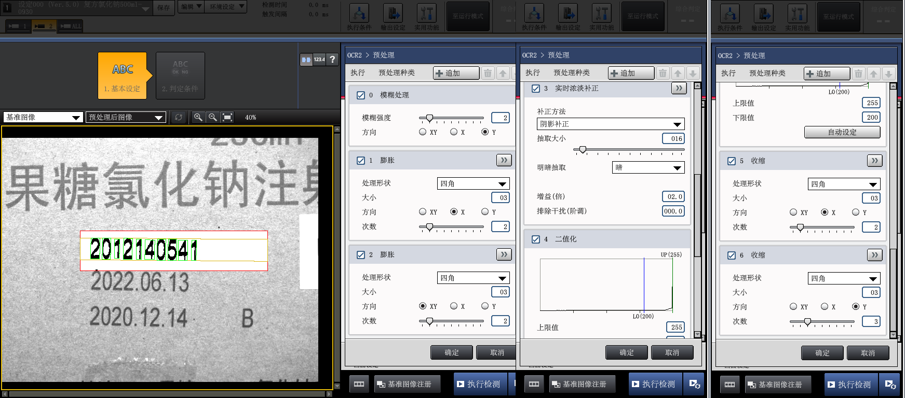
------------------------------------------------------------------------------------------
0-模糊处理：基本上所有的图像第一步都要模糊，因为这样可以将图像中杂点给取消或者减弱。有各种模糊方法，keyence好像默认使用的是均值模糊，其中要注意的是自己写，要使用中值模糊(medianblur)的话，会比普通的均值时间长6~10倍，当然优点就是对边缘保留比较好。
由于各字符之间距离太近，如果对X方向进行模糊，会造成字符粘连无法分割识别，所以这个只对Y方向进行模糊。
左边是未处理，右边是模糊处理后，可以对比看下红色方框中使用模糊处理的区别：
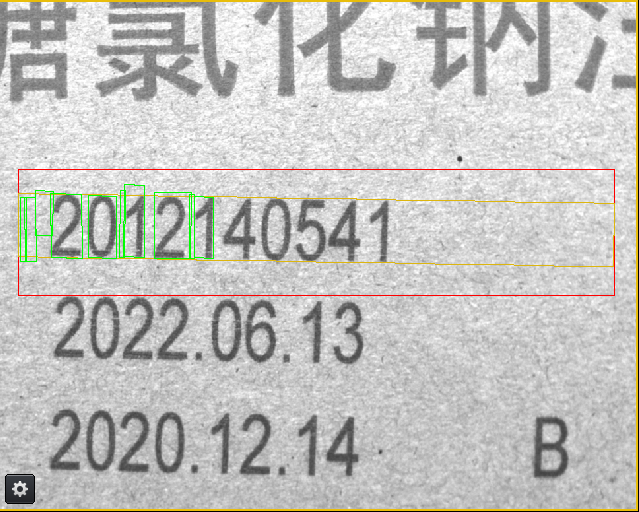 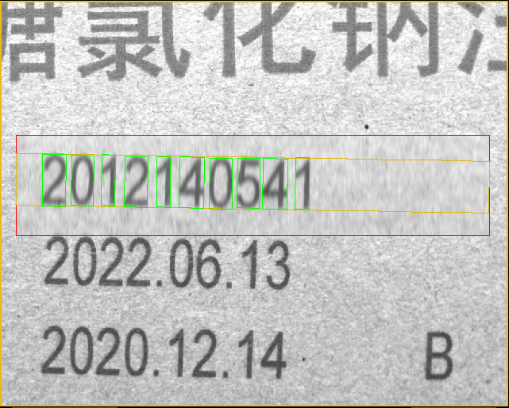
------------------------------------------------------------------------------------------
1-膨胀X 和 2-膨胀XY： 膨胀(dilate)取每个位置领域内最大值，所以膨胀后输出图像的总体亮度的平均值比起原图会有所升高，图像中比较亮的区域的面积会变大，而较暗物体的尺寸会减小甚至消失。此处用于消除字符之间断连。
左边是未膨胀X处理后，右边是膨胀XY处理后：
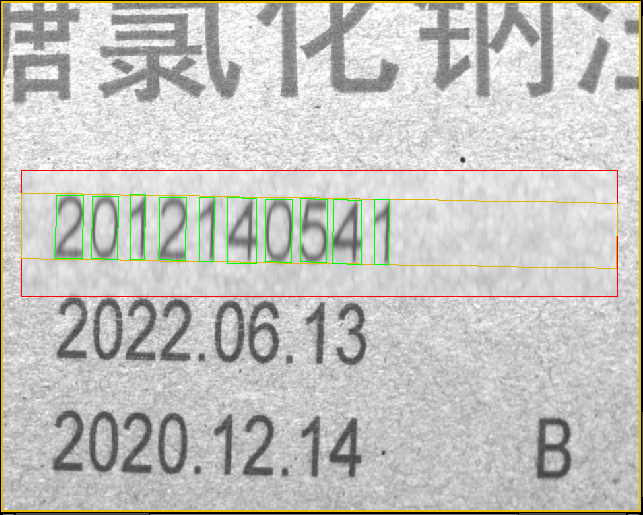 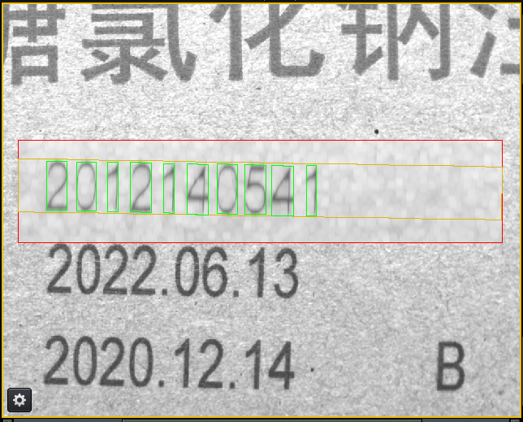
------------------------------------------------------------------------------------------
3-实时浓淡补正：这个作用是将黑变的更黑，白的更白，使得字符与背景分离。这个算子可以说是很NB，对很多项目的图像处理会带来明显效果，当时为了搞明白具体实现原理，网上搜索了下，发现没人知道，并且基恩士对这个算法介绍也仅限于使用，并且还申请了专利。
感觉这个算法像是自适应灰度处理，类似自适应二值化，更适用于二值化前处理。应该是先采样背景，然后根据需要抽取对应的图像。下面是经过实时浓淡补正-抽取暗 处理后的：
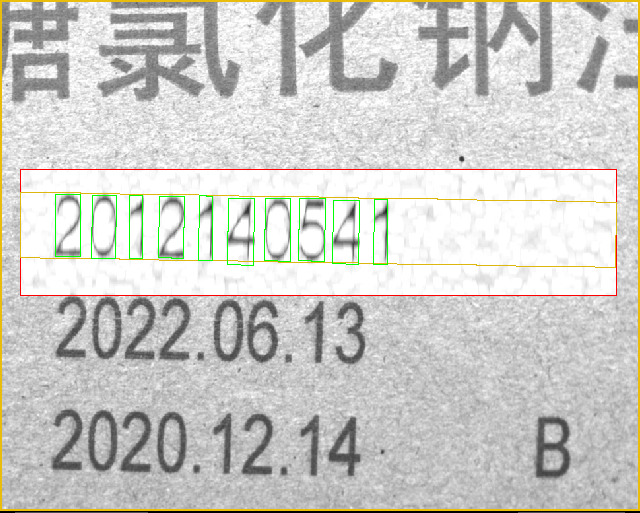
------------------------------------------------------------------------------------------
4-二值化：目的是将字符提取出来，并消除背景。此项中各参数调节是保证字符没有明显断开且没有黑点。由于黑点会被识别成“句号.”，并且keyence中没有参数可以根据.的Y方向位置进行去除，所以要保证没有黑点，否则极易误码。下面是经过“二值化”处理后的：
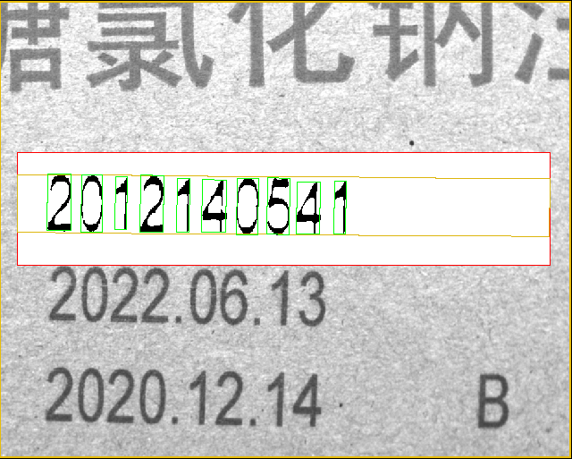
------------------------------------------------------------------------------------------
1-收缩X 和 2-收缩Y： 收缩(腐蚀 erode)取结构元所指定的领域内值的最小值作为该位置的输出灰度值。因为取每个位置领域内最小值，所以腐蚀后输出图像的总体亮度的平均值比起原图会有所降低，图像中比较亮的区域的面积会变小甚至消失，而较暗物体的尺寸会扩大。在二值化处理后，单个字符笔迹变得很细，有断连，收缩用于将字符变粗，而分别收缩X/Y则是由于X和Y方向要收缩的像素值不同，既要保证笔迹变粗，还要字符之间不能粘连造成分割失败。
左边是收缩X处理后，右边是收缩Y处理后：
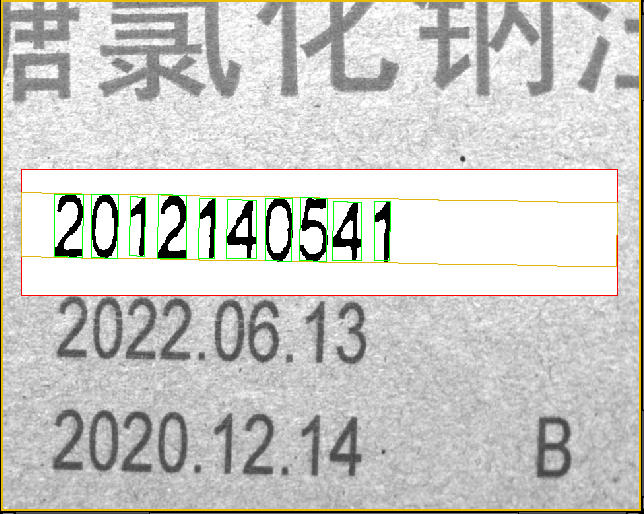 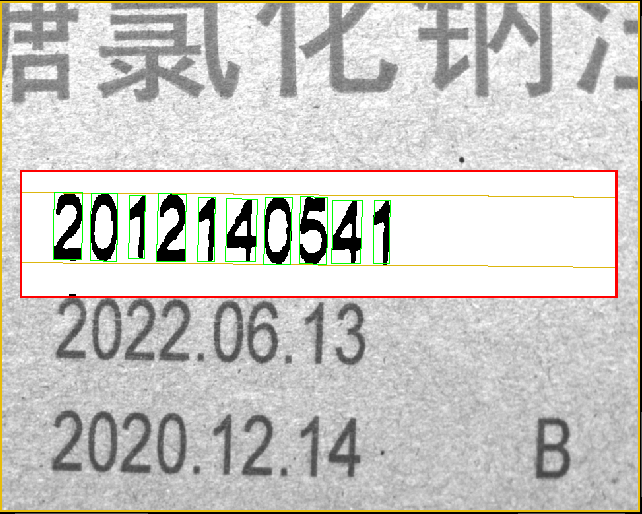
==========================================================================================
其他各参数设置则是针对相机、触发、结果等等与实际项目有关的了，此处就不写了，具体可以看keyence相关的说明书和各个图像视觉的学习资料。